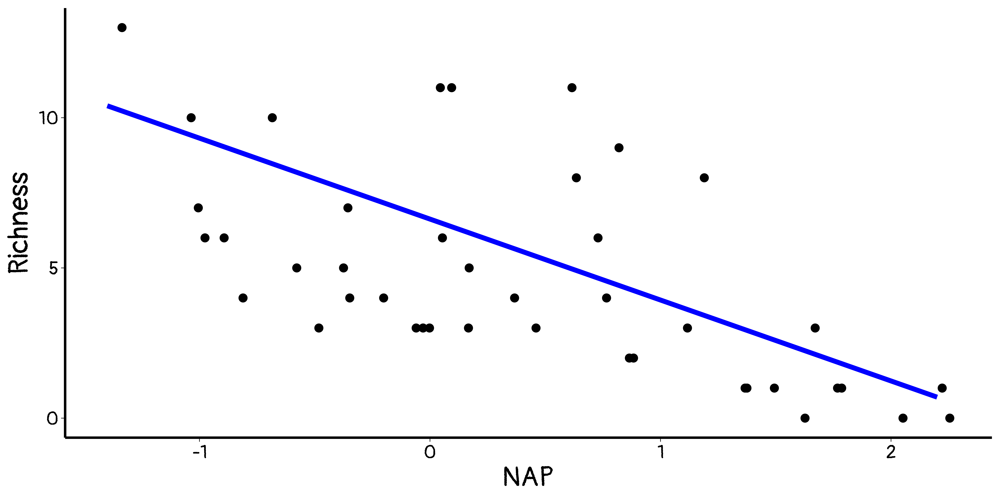
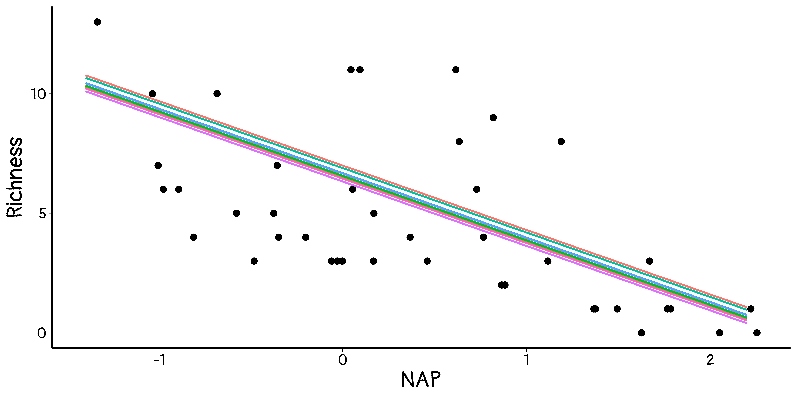
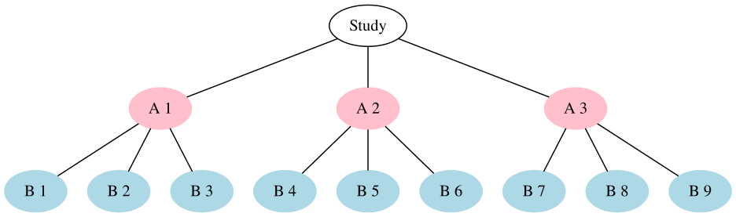
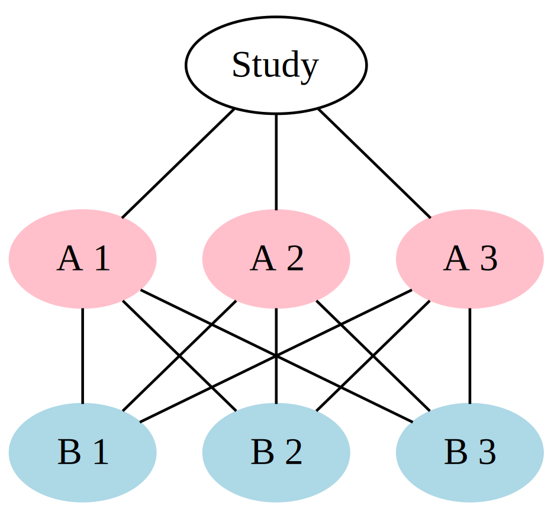
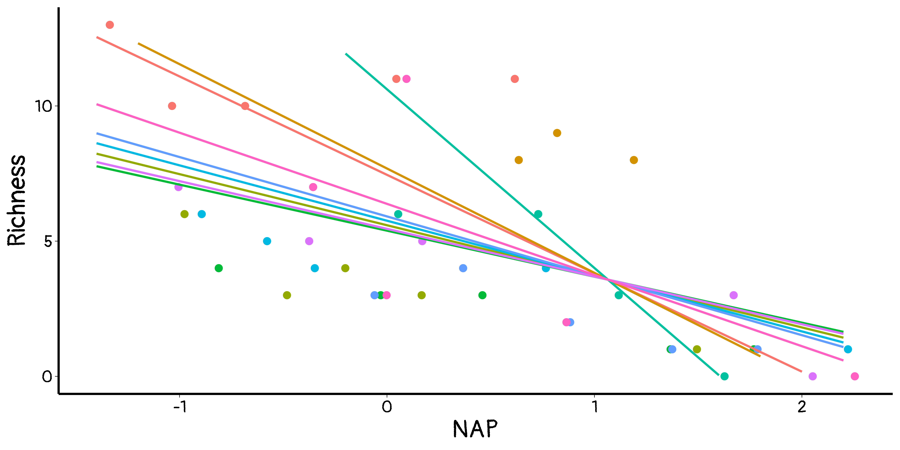

Sample Richness Exposure NAP Beach
1 1 11 10 0.045 1
2 2 10 10 -1.036 1
3 3 13 10 -1.336 1
4 4 11 10 0.616 1
5 5 10 10 -0.684 1
6 6 8 8 1.190 2Introduction to linear mixed models?
Harnessing random effects
Julien Martin
BIO 8940 - Lecture 6
2024-05-16
When you are lacking independence …
Mixed models to the rescue!
Almost all biological data is inherently grouped
Lakes
Incubators
Individual animals/plants
Sites
Mixed models should probably be the rule, not the exception
Advantages of mixed models
Allows us to account for repeated measurements on the same group
Allows for missing data. Does not drop entire subject if missing one observation for that subject.
Helps limit problem of over-fitting many different parameters
Avoids the need to average within a group which underestimates the true variation
Linear model so far
\[ Y_i = \underbrace{ a + \sum_k^n b_k X_{k_i}}_\text{fixed} + \underbrace{\epsilon_i}_\text{random} \]
\[\epsilon_i \sim N(0, {\sigma_{\epsilon}}^2)\]
- Fixed part:
- describe deterministic processes.
- Random part:
- describe stochastic processes.
Problems when
- Observations are not independent (Pseudo-replication)
- Heterogeneous variance
Extending the linear model
\[ Y_{ij} = \underbrace{a + \sum_k^n b_k X_{k_{ij}}}_\text{fixed} + \underbrace{\epsilon_{ij} + a_j}_\text{random} \]
\[\epsilon_{ij} \sim N(0, {\sigma_{\epsilon}}^2)\]
\[ a_j \sim N(0, {\sigma_{a}}^2) \]
- Fixed part:
- Same as before.
- Random part:
- Include grouping variables structuring the data
Example
The data
Marine benthic data from nine inter-tidal areas along the Dutch coast collected by the Dutch institute RIKZ in the summer of 2002. In each inter-tidal area (denoted by ‘beach’), five samples were taken, and the macro-fauna and abiotic variables were measured.
Sample: sample number
Richness: species richness
Exposure: index composed of the surf zone, slope, grain size, and depth of anaerobic layer
NAP: height of sampling station compared to mean tidal level
Beach: beach identifier
Data structure
Traditional linear model
\[Richness_{i} = a + b_1\ NAP_{i} + b_2\ Exposure_{i} + \epsilon_{i}\]
What are the problems?
2 processes at 2 different levels
- Within a beach effect: NAP
- Between beaches effect: Exposure
Within a beach
- Equation for each beach
\[Richness_{i1} = a_1 + b_{1_1}\ NAP_{i1} + \epsilon_{i1}\] \[Richness_{i2} = a_2 + b_{1_2}\ NAP_{i2} + \epsilon_{i2}\]
…
\[Richness_{i9} = a_9 + b_{1_9}\ NAP_{i9} + \epsilon_{i9}\]
9 equations and 27 parameters Not great
Overall, \[Richness_{ij} = a_j + b_{1_j}\ NAP_{ij} + \epsilon_{ij}\]
Between beaches
- Cannot simply do \(Richness \sim Exposure\)
- In \[ Richness_{ij} = a_j + b_{1_j}\ NAP_{ij} + \epsilon_{ij} \]
What captures the effect of Exposure
- Can we do ?
\[ a_{j} = a + b_{exp}\ exposure_{j} + \epsilon_{j} \]
Within and between beaches effects
- within effects -> 27 parameters
- Between effects -> 3 parameters
Total 30 parameters
😱 😭
(with 3 being stats-on stats)
Estimating both simultaneously
\[ Richness_{ij} = (a + a_j) + b_1 NAP_{ij} + b_2 Exposure_j + \epsilon_{ij} \]
- a is the general intercept
- aj are the deviation from \(a\) for each beach
- b1 and b2 are the intercept and slope for the average beach
\[ Richness_{ij} = \underbrace{a + b_1{NAP_{ij}} + b_2{Exposure_j}}_\text{fixed} + \underbrace{a_j + \epsilon_{ij}}_\text{random} \]
\[a_j \sim N(0, {\sigma_{a}}^2)\] \[\epsilon_{ij} \sim N(0, {\sigma_{\epsilon}}^2)\]
😃 5 parameters estimated 😃
Fixed and random effects
Fixed
- a, b1 and b2 estimated with a given error
Random
- aj not estimated directly but assumed to come from a Gaussian distribution with a mena of 0 and an estimated Variance
\[ a_j \sim N(0, {\sigma^2_{a_j}}) \]
Fixed part
\[y_{ij} = \underbrace{\color{red}{a + b_1{NAP_{ij}}} + b_2{Exposure_j}}_\text{fixed} + \underbrace{a_j + \epsilon_{ij}}_\text{random}\]
Random part
\[ Richness_{ij} = \underbrace{\color{red}{a + b_1{NAP_{ij}}} + b_2{Exposure_j}}_\text{fixed} + \color{purple}{\underbrace{a_j + \epsilon_{ij}}_\text{random}} \]
R model output
Linear mixed model fit by REML ['lmerMod']
Formula: Richness ~ NAP + scale(Exposure, scale = F) + (1 | Beach)
REML criterion at convergence: 225.5
Scaled residuals:
Min 1Q Median 3Q Max
-1.3462 -0.5025 -0.2306 0.2150 4.2746
Random effects:
Groups Name Variance Std.Dev.
Beach (Intercept) 0.3378 0.5812
Residual 9.3735 3.0616
Number of obs: 45, groups: Beach, 9
Fixed effects:
Estimate Std. Error t value
(Intercept) 6.6256 0.5221 12.691
NAP -2.6941 0.4700 -5.732
scale(Exposure, scale = F) -3.0005 0.5417 -5.539
Correlation of Fixed Effects:
(Intr) NAP
NAP -0.313
scl(Ex,s=F) 0.015 -0.047Estimated equation
\[ Richness_{ij} = \underbrace{6.63 -2.69{NAP_{ij}} -3{Exposure_j}}_\text{fixed} + \underbrace{a_j + \epsilon_{ij}}_\text{random} \]
\[ a_j \sim N(0, 0.34) \]
\[ \epsilon_{ij} \sim N(0, 9.37) \]
BLUPs (\(a_j\)) are shrunk
- Estimates for each groups are constrained (shrunk) too avoid extreme values.
Variance components
Modelling the variance
- We estimated the variance explained by the model
\({\sigma_{\hat{y}}}^2\).
- We decomposed teh residual variance in 2 :
- \({\sigma_a}^2\) : across beach variance
- \({\sigma_{\epsilon}}^2\) Variation not associated to beaches (i.e. within-beach variance)
Estimating repeatability
Repeatability Proportion of (residual) variance associated to among levels of a random effect.
Here variation associated to among beach differences
\[ Richness_{ij} = \underbrace{a + b_1{NAP_{ij}} + b_2{Exposure_j}}_\text{fixed} + \underbrace{a_j + \epsilon_{ij}}_\text{random} \]
\[ a_j \sim N(0, {\sigma_a}^2) \]
\[\epsilon \sim N(0, {\sigma_{\epsilon}}^2)\]
\[ r = \frac{{\sigma_a}^2}{{\sigma_a}^2 + {\sigma_{\epsilon}}^2}\]
With our model
\[ Richness_{ij} = \underbrace{37.3 -2.69{NAP_{ij}} -3{Exposure_j}}_\text{fixed} + \underbrace{a_j + \epsilon_{ij}}_\text{random} \]
\[a_j \sim N(0, 0.34)\]
\[\epsilon_{ij} \sim N(0, 9.37)\]
\[ r^2 = \frac{0.34}{0.34 + 9.37} = \frac{0.34}{9.71} = 0.03 \]
Repeatability is conditioned on fixed effects
Differences among groups can be explained by fixed effects and thus influence \({\sigma_a}^2\)
We can estimate repeatability with 2 models for example:
- With exposure \[ Richness_{ij} = \underbrace{a + b_1{NAP_{ij}} + b_2{Exposure_j}}_\text{fixed} + \underbrace{a_j + \epsilon_{ij}}_\text{random} \]
- or without
\[ Richness_{ij} = \underbrace{a + b_1{NAP_{ij}}}_\text{fixed} + \underbrace{a_j + \epsilon_{ij}}_\text{random} \]
Repeatability With exposure effects
\[ Richness_{ij} = \underbrace{37.3 -2.69{NAP_{ij}} -3{Exposure_j}}_\text{fixed} + \underbrace{a_j + \epsilon_{ij}}_\text{random} \]
\[ a_j \sim N(0, 0.338) \]
\[ \epsilon_{ij} \sim N(0, 9.374) \]
\[ r\ (with\ exposure) = \frac{0.338}{0.338 + 9.37} = 0.03 \]
Repeatability without exposure
\[ Richness_{ij} = \underbrace{6.58 -2.57{NAP_{ij}}}_\text{fixed} + \underbrace{a_j + \epsilon_{ij}}_\text{random} \]
\[ a_j \sim N(0, 8.668) \]
\[ \epsilon_{ij} \sim N(0, 9.362) \]
\[ r\ (without\ exposure) = \frac{8.668}{8.668 + 9.36} = 0.48 \]
Models with multiple random effects
When tricky becomes trickier
Complex model use only when necessary
Easy to build a nonsensical models which is over-parametrized …
Key to understand differences between random effect types
Nested effects
B is nested within A if each level of B is present in only 1 level of B
Crossed effects
A and B are crossed .. when they are not nested 😜
A and B are fully crossed when all levels of B are present in all levels of A
Random regression
- Previous model assumed that NAP effect was the same for all beaches
This might not be true
- Beaches might vary in both their
mean Richnessand theirresponse to NAP
\[ Richness_{ij} = \underbrace{a + b_1{NAP_{ij}} + b_2{Exposure_j}}_\text{fixed} + \underbrace{a_j + \color{#DD3333}{b_{1j}NAP_{ij}} + \epsilon_{ij}}_\text{random} \]
\[\epsilon_{ij} \sim N(0, \sigma^2_{\epsilon})\]
\[\begin{bmatrix} a_j \\ \color{#DD3333}{b_{1j}} \end{bmatrix} \sim N\left(0, \begin{matrix} \sigma_a^2 & \color{blue}{cov(a_j, b_{1j})} \\ \color{blue}{cov(a_j, b_{1j})} & \color{#DD3333}{\sigma_{b_{1j}}^2} \end{matrix} \right) \]
Random regression
\[ Richness_{ij} = \underbrace{a + b_1{NAP_{ij}} + b_2{Exposure_j}}_\text{fixed} + \underbrace{\color{#DD3333}{a_j + b_{1j}NAP_{ij}} + \epsilon_{ij}}_\text{random} \]
Building a mixed model
Choosing effects
Fixed effects
- based on question
- based on confounding effects (think and justify based on causality)
Random effects
- based on questions
- based on data structure
Testing for effects
Fixed effects
Degrees of freedom cannot be estimated exactly
Use approximation (Satterwaite, Kenward-Rogers, …)
Random effects
Likelihood Ratio test
Fit model with and without a random effect using REML and then compare
Happy modelling

BIO 8940 - Lecture 6